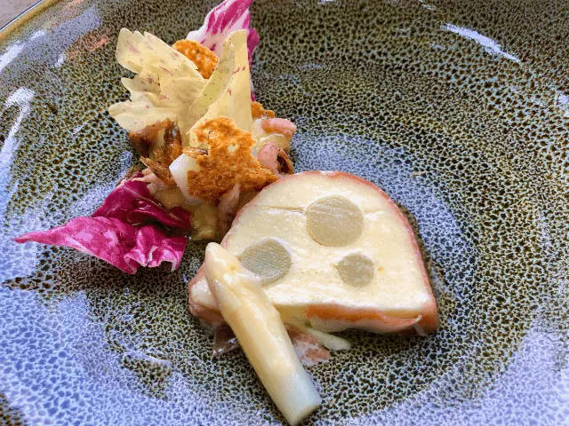
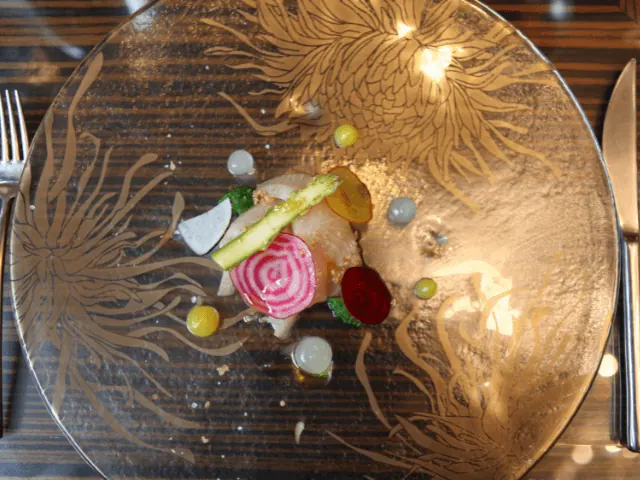
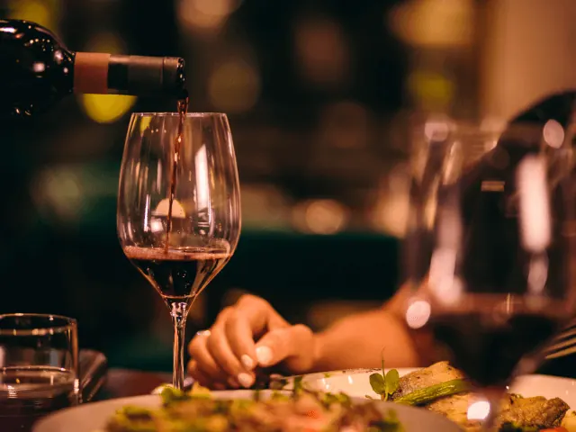
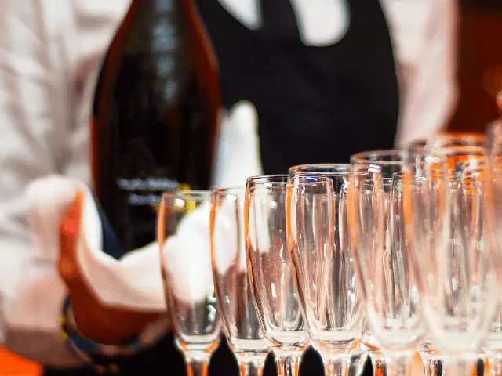
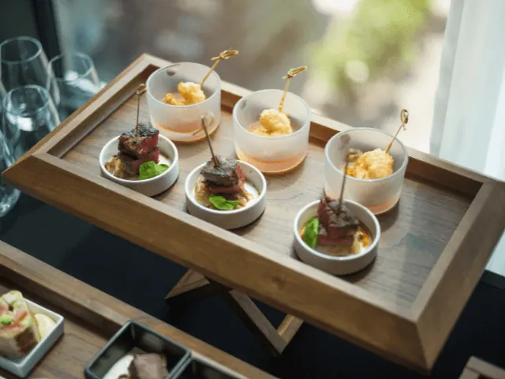

Exclusief dineren in Nijmegen, wat kan je verwachten?
Gepubliceerd op 4 februari 2023, bijgewerkt op 20 oktober 2023
Onderdeel van de gids Restaurants in Nijmegen

In Nijmegen zijn er een aantal opties te vinden wanneer je graag exclusief wilt dineren. Exclusief dineren houdt in dat je een gezellige avond uit organiseert in een luxe restaurant. In het betreffende restaurant krijg je een menukaart waarbij je enkel kunt kiezen uit exclusieve gerechten. Deze exclusieve restaurants staan namelijk bekend om hun kwaliteit en om hun uitgebreide selectie aan exclusieve gerechten. Tijdens een exclusief diner zal het restaurant alles op alles zetten om jou de gehele avond in de watten te leggen. De kosten van een exclusief restaurant zijn daarbij vanzelfsprekend ook een stuk duurder dan een ‘standaard’ restaurant. Wanneer je exclusief wilt dineren in Nijmegen, dan kun je kiezen uit een aantal exclusieve opties.

Overzicht Sterren restaurants in Nijmegen
1 – Landgoed Brakkesteijn
Ben je op zoek naar een plek waar je op een bijzondere manier exclusief kunt dineren? Bij Landgoed Brakkesteijn ben je dan aan het juiste adres. Bij het landgoed kun je namelijk met zowel grote als kleine groepen genieten van de lekkerste exclusieve gerechten. Het restaurant biedt plek voor 12 tot 250 personen, die zowel binnen als buiten op het landgoed plaats kunnen nemen. Wanneer je binnen wilt dineren, dan kun je kiezen uit een aantal mooie exclusieve ruimtes. Het landgoed is van binnen prachtig, maar heeft van buiten ook een flinke rijkdom te bieden. Het landgoed ligt namelijk midden in het stadspark van Nijmegen en biedt daarmee de gasten een prachtige setting om exclusief te dineren in de prachtige natuur.
Exclusieve en sfeervolle locatie, te midden van een groene omgeving
Wanneer je een bezoek brengt aan het landgoed, dan kun je kiezen uit twee verschillende locaties. De twee verschillende locaties bestaan namelijk uit het Landhuis en het Koetshuis. Allebei de locaties beschikken over een bijzondere sfeer en beschikken over een aantal mooie exclusieve ruimtes voor een diner. Wanneer je exclusief wilt dineren bij Landgoed Brakkesteijn, dan adviseert het team van het landgoed je graag met het kiezen van de ruimte. Op deze manier ben je ervan verzekerd dat het exclusieve diner plaatsvindt in de ruimte die het beste past bij je wensen.
Chique diner in landhuis
Wil je genieten van een chique diner in het prachtige en stijlvolle landhuis? Dan kun je gemakkelijk en snel in contact komen met Landgoed Brakkesteijn. Samen met het personeel wordt bekeken welke ruimte het beste bij je past. Hierna kun je direct je reservering plaatsen in Landgoed Brakkesteijn.
Exclusief eten en drinken
Wanneer je kiest voor Landgoed Brakkesteijn, dan ben je ervan verzekerd dat je kunt genieten van exclusief eten en drinken. Op het Landgoed kun je samen met je gezelschap genieten van de allerlekkerste culinaire kwaliteiten van de chef-kok en het geweldige keukenteam. Het gehele team zorgt ervoor dat je kunt genieten van een exclusief diner waarbij de kwaliteit voorop staat.
Afgestemd op het seizoen
Het maakt niet uit of je wilt genieten van een 4-gangendiner of van een walking diner, bij Landgoed Brakkesteijn kun je op allerlei manieren genieten van een exclusief diner. Hier vind je een breed scala aan verrassende gerechten die gemaakt worden met dagverse ingrediënten. De gerechten worden afgestemd op het seizoen waarbij je de creativiteit en de passie terug proeft in de gerechten. Het exclusive dining is te combineren met een lekker wijnarrangement. Tijdens het wijnarrangement word je geholpen door een wijnspecialist, waardoor je verzekerd bent van de lekkerste wijn bij je gerechten.

2 – Restaurant Manna Nijmegen
Wanneer je denkt aan exclusief dineren, dan denk je waarschijnlijk ook direct aan restaurants met een Michelin-ster. Restaurant Manna is een restaurant in Nijmegen welke voorzien is van een echte Michelin-ster. Wanneer je een bezoek brengt aan restaurant Manna, dan ben je verzekerd van de prijswinnende gastvrijheid en de culinaire creativiteit. Restaurant Manna staat is een Nijmeegs wereldrestaurant welke een grote voorliefde heeft voor vis. Het exclusieve restaurant is een prachtige locatie waarbij je kunt genieten van een lekker intiem diner, een zakelijke bespreking of wanneer je iets te vieren hebt met je gezelschap.
Laat je verrassen door chef-koks
In het exclusieve restaurant kun je kiezen uit gerechten van de veelzijdige menukaart, maar het is ook mogelijk om je te laten verrassen door de chef-koks van het restaurant. Restaurant Manna staat in Nijmegen en omgeving bekend als het nummer één visrestaurant. Toch kun je in het restaurant ook genieten van de lekkerste vleesgerechten en vegetarische gerechten. Het leukste is dat het menu elke acht weken wordt veranderd, waardoor je steeds kunt genieten van een verrassend menu in het restaurant.

3 – Expect the unexpected bij restaurant Manna
Restaurant Manna is de perfecte plek om te genieten van een heerlijke lunch of diner. De maaltijden hier zijn nooit alledaags, maar wel ongedwongen en bijzonder. Wanneer je wilt genieten van een lekkere lunch, dan kun je genieten van gerechten van sandwiches tot aan salades en fruits de mer. Wil je zeer exclusief lunchen, dan kun je ook kiezen voor een vier of vijf gangen lunch.
Streetfood en sterrengerechten
Wil je heerlijk dineren bij restaurant Manna, staan er een aantal overheerlijke klassiekers op het menu. De klassiekers bestaan uit een combinatie van streetfood met een ruime plus en sterrengerechten zonder al te veel poeha. Een uniek concept in het restaurant is de welbekende Seafoodbar van het restaurant. Bij dit concept geniet je van een weelde van vis, schaal- en schelpdieren. Voorgenoemde worden direct vers geleverd bij het restaurant vanuit de zee. Hierdoor kun je genieten van de lekkerste en de verste visgerechten van Nijmegen bij restaurant Manna.
De Blue Bar van restaurant Manna
Bij restaurant Manna kun je ook genieten van een voortreffelijke brasserie. In deze brasserie zit ook een erg gezellige Blue Bar gevestigd. De Blue Bar van restaurant Manna is de ontmoetingsplek voor Nijmegenaren, maar ook voor gasten en internationale gasten. De gasten kunnen in de Blue Bar genieten van heerlijke aperitiefjes en digestiefjes voor en na het eten. In de Blue bar kun je genieten van een indrukwekkende schatkamer van gastvrijheid en drankjes. Op deze plek kun je genieten van de lekkerste wijnen, champagnes, likeuren, whisky’s en heerlijke biertjes van de tap of fles. Een echte aanrader is de Blue Gin die gemaakt is voor restaurant Manna zelf!

4 – De Nieuwe Winkel Nijmegen
Het laatste exclusieve restaurant die we graag willen vermelden is De Nieuwe Winkel in Nijmegen. Restaurant De Nieuwe Winkel in Nijmegen is een echt verborgen juweel in de prachtige binnenstad van Nijmegen. Het exclusieve restaurant is gevestigd in een voormalig weeshuis en beschikt nog steeds over een prachtige veertiende-eeuwse entree. Het gebouw was namelijk voorheen de basis van een zeer indrukwekkend kloosterwerk. Toen de laatste non in het jaar 1638 overleed, werd het gebouw omgetoverd tot het ‘Arme kinderen weeshuis’. Dit weeshuis was speciaal voor kinderen die niet in het bezit waren van burgerrecht: de katholieke kinderen.
Meekijken in het restaurant
Tegenwoordig heeft het gebouw een geheel nieuwe bestemming. Anno 2023 is er namelijk een zeer exclusief restaurant in gevestigd. Hier worden op eetgebied allerlei grenzen doorbroken. In het restaurant koken de geweldige koks in een open keuken, waardoor je als gast kan meekijken vanuit je tafel. Het restaurant en de keuken van het restaurant zijn namelijk samen één. Het restaurant heeft hier bewust voor gekozen omdat dit perfect past bij hun eigen filosofie. Het restaurant wil namelijk dat de afstand van de ingrediënten en hetgeen wat op je bord ligt, zo kort mogelijk maken.
Open keuken
De open keuken van het restaurant is ook écht open. Het is niet een halfopen keuken of een open keuken met een doorgeefluik. Je hebt direct vanuit je tafel een goede kijk op de keuken. De keuken van het restaurant is volledig geïnspireerd op de vegetarische keuken. Daarnaast kun je in het restaurant ook genieten van de lekkerste veganistische gerechten. Een stuk vlees of vis kom je dus gegarandeerd niet tegen in het restaurant.
Twee Michelin sterren
Het restaurant is erg populair in Nijmegen en omgeving. Sterker nog: wanneer je hier een hapje wil een, kom je eerst op een wachtlijst terecht. Dit komt doordat het restaurant twee jaar geleden werd beloond met een Michelin-ster en afgelopen jaar met maar liefste twee Michelin-sterren. Een etentje bij De Nieuwe Winkel in Nijmegen kan dus met recht een zeer exclusief diner genoemd worden.

Exclusief dineren in Nijmegen: een unieke ervaring
Wil je exclusief dineren in Nijmegen, dan is het aan te raden om vooraf te bekijken wat je verwachtingen zijn. Bij restaurant de Nieuwe Winkel moet je namelijk al ruim vooraf een reservering plaatsen om op de wachtlijst terecht te komen. Het is dus verstandig om vooraf goed jouw wensen op een rijtje te zetten. Op deze manier ben je er namelijk van verzekerd dat je niet voor teleurstellingen komt te staan als je exclusief wilt dineren in Nijmegen. Wanneer je een restaurant hebt gevonden waar je exclusief wil dineren, dan is het belangrijk om alvorens contact op te nemen met het restaurant. Op deze manier kun je jouw wensen doorgeven en ben je ervan verzekerd dat je bezoek geheel naar wens verloopt. Is dat het geval? Dan is jouw exclusieve diner in Nijmegen een ervaring die je niet snel zult vergeten!